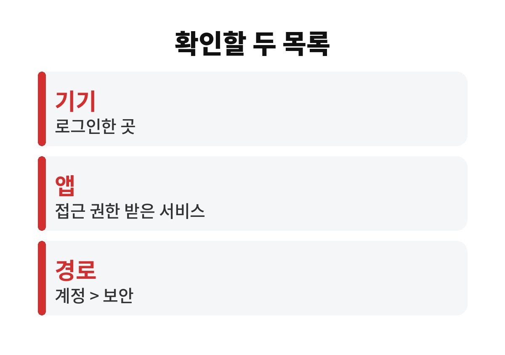
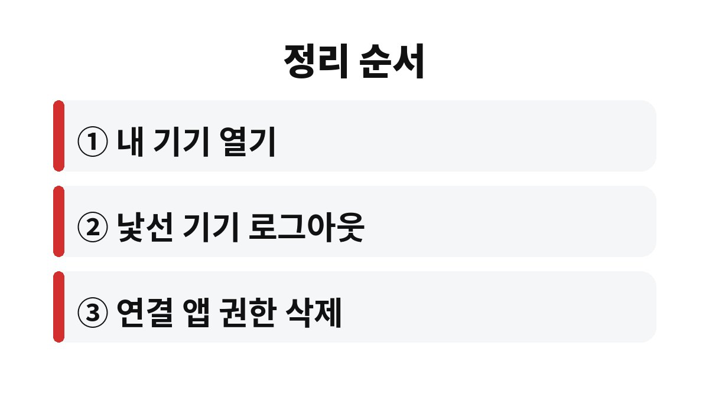

구글 계정 로그인 기기는 구글 계정의 보안 화면에서 내 기기 항목으로 들어가면 볼 수 있고, 모르는 기기는 그 자리에서 바로 로그아웃시킬 수 있다.
연결된 앱은 같은 보안 화면의 서드 파티 앱 및 서비스에서 따로 정리한다.
Google 계정 고객센터 안내를 확인해, 두 목록을 헷갈리지 않게 순서대로 적었다.
목록에서 낯선 이름을 발견하면 가슴이 철렁하지만, 대부분은 예전에 쓰던 휴대전화나 회사 컴퓨터가 그대로 남은 경우다.
기기 이름과 마지막 활동 시점을 먼저 보고 나서 판단해도 늦지 않다.
비밀번호를 바꿔도 연결된 앱 권한 목록은 따로 남아 있을 수 있다.
그래서 비밀번호 변경과 기기·앱 정리는 별개의 작업으로 본다.
기기 목록은 내 계정에 로그인해 둔 곳이고, 연결 앱은 구글 계정으로 가입하거나 로그인해 접근 권한을 받은 서비스다.
이름이 비슷해 보여도 지우는 화면이 다르다.
나는 몇 달에 한 번 이 화면을 열어 목록을 훑어보는 정도로 관리한다.
매일 들여다볼 필요는 없고, 새 휴대전화로 바꾼 직후나 공용 컴퓨터에서 로그인한 다음 날이 확인하기 좋은 때다.
구글 계정 로그인 기기 목록에는 기기 이름과 종류, 마지막 활동 시점 같은 정보가 나온다.
표시되는 항목은 기기와 앱 버전에 따라 조금씩 다를 수 있다.
마지막 활동이 몇 달 전인 기기라도 지금 쓰지 않는다면 로그아웃해 두는 편이 낫다.
중고로 넘긴 휴대전화나 반납한 업무용 노트북이 대표적이다.
기기를 처분하기 전에는 계정 로그아웃부터 끝낸다.
기기 이름이 모델명 그대로 나와서 어느 것이 어느 기기인지 헷갈릴 때가 있다.
그럴 때는 마지막 활동 시점이 방금 전인 기기가 지금 보고 있는 화면의 기기라고 보고 하나씩 대응해 본다.
같은 종류 기기가 여러 대라면 가족 구성원 것인지도 함께 따져 본다.
| 항목 | 보이는 내용 | 판단 기준 |
|---|---|---|
| 기기 이름·종류 | 휴대전화, 컴퓨터, 태블릿 구분 | 내가 쓰는 기기인지 |
| 마지막 활동 | 가장 최근에 접속한 시점 | 오래 안 쓴 기기는 로그아웃 후보 |
| 대략적인 위치 | 접속한 지역 표시 | 낯선 지역이면 우선 확인 |

서드 파티 앱 및 서비스에는 구글 계정으로 가입했던 쇼핑몰, 메모 앱, 게임이 줄줄이 나온다.
이메일 읽기나 드라이브 파일 접근처럼 권한이 넓은 서비스부터 본다.
이름이 낯설면 지우고, 필요해질 때 다시 연결하면 된다.

로그아웃한 기기에서는 지메일과 유튜브를 다시 로그인해야 한다.
가족이 함께 쓰는 태블릿이라면 지우기 전에 한마디 해 두는 편이 낫다.
목록에 내 기기가 안 보이면 다른 구글 계정으로 로그인해 두었을 가능성이 있다. 이때는 계정을 바꿔 가며 같은 화면을 열어 본다.
지우고 나서 앱이 로그인되지 않으면 해당 서비스에서 구글 로그인을 다시 연결하면 된다.
회사나 학교에서 받은 계정은 관리자가 정책을 정해 두어 직접 지울 수 없는 항목이 있을 수 있다.
그럴 때는 소속 기관의 IT 담당자에게 문의한다.
이번 주에 할 일은 두 가지다. 내 기기 목록에서 마지막 활동이 오래된 기기를 하나 지우고, 연결 앱 목록에서 이름이 낯선 서비스를 하나 확인한다.
계정에 접근할 수 없거나 결제 기록처럼 의심스러운 흔적이 있으면 구글 계정 고객센터에 문의한다.
참고 자료: Google 계정 고객센터 「계정 액세스 권한이 있는 기기 확인하기」(2026년 11월 확인) · Google 계정 고객센터 「계정 보안 강화하기」(2026년 11월 확인)
※ 2026년 기준 공식 안내를 바탕으로 정리한 글이며, 기기·앱 버전에 따라 메뉴 이름이 다를 수 있다.